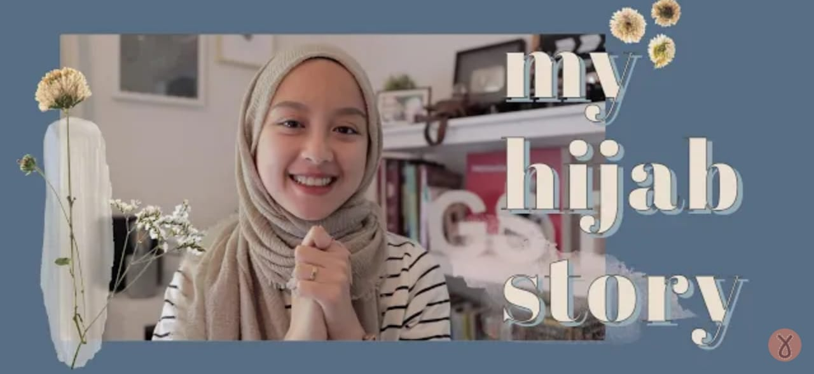

Story Hijab Gita Savitri
Dipubliasikan, 25 Juni 2019

Assalamualaikum all !!!
Kali ini ada kisah inspiratif dari Gita Savitri tentang dirinya yang memutuskan untuk berhijab. Kalian penasaran tidak sih apa ya yang membuat Ka Gita berfikir untuk memutuskan mengenakan hijab. Yuk Simak Video Penjelasnnya klik disini.
Tutorial Hijab Ala Wirda Mansur
Assalamualaikum teman-teman Semua..!!!
Bagaimana kabar kalian semua ? Semoga semua baik-baik saja ya.
Oh iya, kali ini kita akan Sharing nih gimana ya cara Wirda Mansur mengenakan Hijab. Seperti yang kita Lihat, bahwa hijab yang dikenakan Wirda sangat menarik ya. Kalian Penasaran tidak dengan tutorial bagaimana cara mengenakan hijab Ala Wirda Mansur ? Yuk Langsung Saja klik disini.